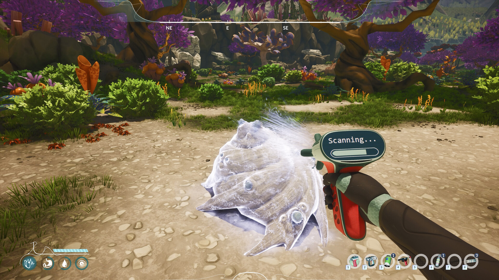
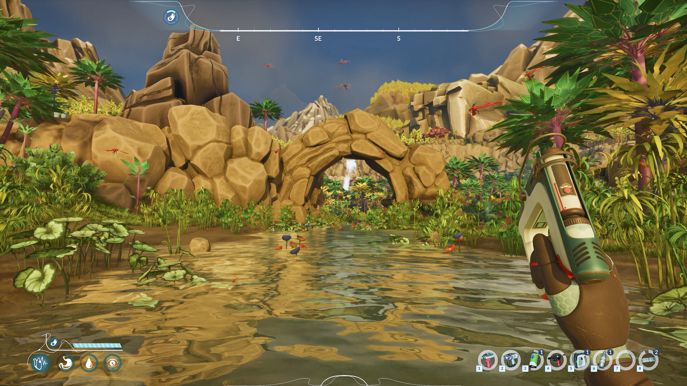
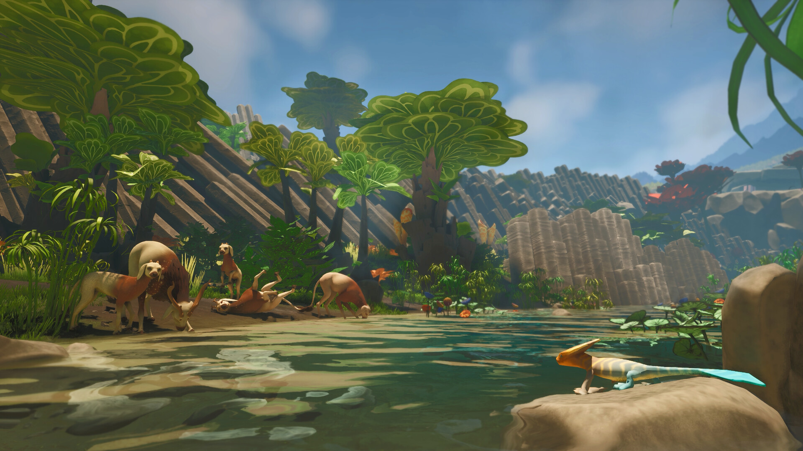
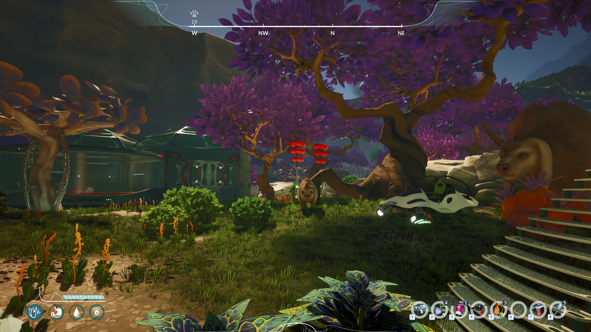
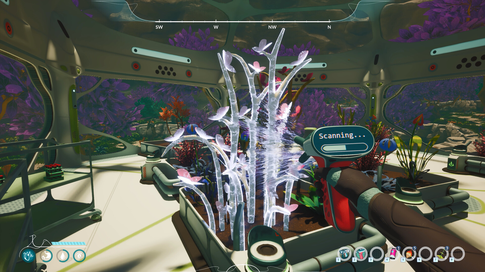
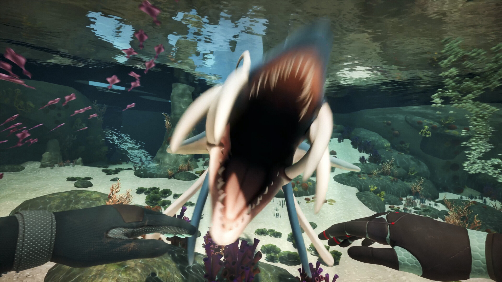

Overview: The Biomes of Sota7
Sota7 is a visually vibrant alien world structured around distinct biomes, each with its own ecological rules. As Hennessy, you'll need to understand each biome's threat profile before venturing in — some require specific equipment or a minimum level of crossbred plant defenses to survive comfortably.
The biomes confirmed from official developer materials and the August 31 demo are listed below. Post-launch entries will be updated with verified in-game names and expanded species data.
The top-center compass (visible in all screenshots) shows your cardinal direction. The compass UI is a thin translucent arc — very minimal, very readable against any biome backdrop.
Biome Directory

🏜️ Amber Plains
Recommended starting biome. Sandy-loam terrain with sparse rock formations, moderate tree coverage including the distinctive purple-foliaged alien species, and an abundance of orange stalk plants. Fauna is mostly docile — large herbivore herds are common. The stone arch formation marks the biome's eastern border with the river crossing.
Resources: Plant fiber, edible fruit, stone chip, orange stalk extract (crossbreeding catalyst)
Hazards: Territorial orange crab-fauna near rock clusters; temperature spikes at midday without shelter

🌊 River Crossing
A lush tropical corridor where the main freshwater river runs through stone arch formations and into a shallow pool. Dense tropical foliage covers the banks, including large lily-pad varieties on the water surface. Red dragonfly-like flying fauna patrol the airspace and are non-threatening. This is your primary early-game water source.
Resources: Fresh water, aquatic plant specimens (high crossbreeding potential), river fish-analogues, lily specimens
Hazards: Slippery stone surfaces near waterfalls; deeper sections connect to the Underwater biome — approach with caution

🦌 Open Meadow / Watering Hole
A broad, sun-drenched meadow area with low flat-topped alien trees and a central watering hole. This is where Sota7's large herd fauna congregate — the dog-lion-deer hybrids seen in screenshot_3. Completely safe for observation and interaction. The teal-finned lizard analogue (screenshot_3 right) is also found near the water's edge.
Resources: Herd creature samples (non-lethal extraction), meadow plant varieties, fresh water
Hazards: Essentially none at day; territorial shifts possible at night when predators emerge

🌙 Purple Canopy Forest
The signature Sota7 landscape: towering trees with vivid purple foliage and thick amber-orange trunks. Most visible at night, when the canopy creates dramatic silhouettes against the stormy sky. This is an intermediate biome — more dangerous fauna emerge at night and the visibility requires light sources or bioluminescent hybrid plants.
Resources: Purple leaf specimens (high crossbreeding value), amber bark extract, orange stalk clusters
Hazards: Night predators; reduced visibility without bioluminescent gear; red alarm-spawn fauna near base camp if you've disturbed certain plants

💎 Crystal Caverns (Subterranean)
Hidden underground cavern system accessible through cave entrances at biome borders. The crystal-like, translucent, branching plant specimens seen in the lab (screenshot_6) originate here — they can only be found and scanned in this biome. Bioluminescent flora provides ambient light. Essential for high-tier crossbreeding chains.
Resources: Crystal flora specimens, mineral crystals (rare), cave mushroom analogues
Hazards: No natural light (requires torch or bioluminescent hybrid plant), cave-adapted predators, narrow passages

🌊 Underwater / Abyssal Zone
Accessible by diving into deeper river sections or ocean entry points. The teal-lit underwater environment hosts unique coral-analogue plants (pink petal varieties visible in screenshot_7), colorful sea life — and the Abyssal Predator: a large white vertebrate with a distinctive gaping jaw attack (screenshot_7). Do not enter without defensive gear.
Resources: Rare aquatic specimens with unique chemical traits; coral analogues with high crossbreeding compatibility
Hazards: Abyssal Predator (lethal, aggressive); limited oxygen; requires breathing equipment
Biome Quick Reference
| Biome | Difficulty | Primary Resource | Key Hazard | Water Available |
|---|---|---|---|---|
| Amber Plains | Beginner | Plant fiber, stone | Territorial crabs | ✓ Moderate |
| River Crossing | Beginner | Fresh water, aquatic plants | None (surface) | ✓ Abundant |
| Open Meadow | Beginner | Herd fauna samples | None (daytime) | ✓ Abundant |
| Purple Canopy Forest | Intermediate | Purple leaf, bark extract | Night predators | ✗ Low |
| Crystal Caverns | Advanced | Crystal flora, minerals | Dark, cave fauna | ✗ None |
| Underwater / Abyssal | Expert | Rare aquatic specimens | Abyssal Predator | Aquatic |